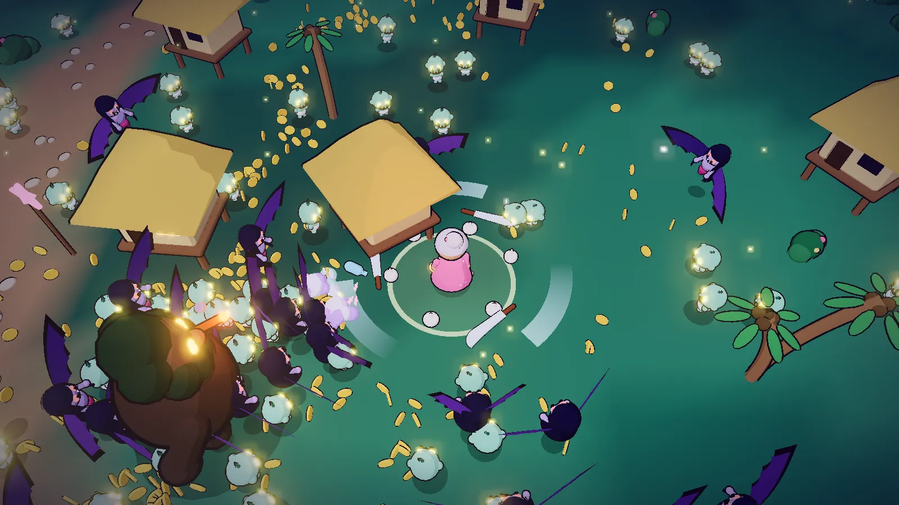

Aswang Apocalypse
Survive the night, Lola: an endless monster horde game

ActionTouch · Mouse · Keyboard · GamepadFree, in the browser
Play Aswang ApocalypseAbout the game
In Barrio San Roque the old saying goes: never go out after dark. Each night the monsters crawl out of the old balete tree, and Lola Nena, a grandmother with glasses and a broom, refuses to hide. Aswang Apocalypse is a horde survival game in the style of Vampire Survivors, drawn like a Filipino komiks (comic book). You steer, and Lola's weapons do the fighting on their own.
Her arsenal comes straight from a provincial kitchen and a church pew: rock salt, garlic, an itak (machete), agua bendita (holy water), tsinelas (flip-flops) and a walis (broom). The night throws tiyanak, manananggal, duwende, the White Lady and bigger bosses at her, and it only ends when the sun comes up. The story mode follows Lola through five chapters told in comic panels, and once you have met the monsters there, the endless mode lets you see how long you can last.
How to play
Move Lola around the map and keep her out of reach. Her weapons fire automatically at whatever is closest. Defeated monsters drop experience; fill the bar and you level up, which pauses the action and offers three cards. Pick one to learn a new weapon or power up one you already have. Clay jars on the map break when Lola walks into them and hold coins, healing lechon (roast pig) and other goodies.
Strong monsters sometimes drop a bayong, the woven bag of a Filipino market-goer. Opening one gives prizes, and if one of your weapons has reached level 5 and you are carrying the right boost, the bayong evolves it into something far stronger.
Bosses arrive through the night: the Tikbalang, the Manananggal Queen and the Kapre. Last of all comes the Bakunawa, the serpent that eats the moon. Beat it and dawn breaks. Between nights, the coins you earn buy lasting upgrades, and you can pick from several heroes, each with a different starting weapon. In the Workshop you can design your own hero and share it.
- Keyboard: WASD or the arrow keys to move, 1, 2 or 3 to pick a level-up card, Esc to pause.
- Mouse: no clicking needed in a fight. Lola walks toward the pointer and stops when you rest it on her.
- Phone and tablet: touch anywhere and drag; a joystick appears under your thumb.
- Gamepad: the left stick or D-pad moves, A picks a card, Start pauses.
There are three difficulties, Madali (easy), Normal and Mahirap (hard), and a few extra modes open up as you play.
Tips
- Keep moving in wide circles. Standing still lets the crowd close in from every side at once.
- When the Tikbalang stops charging, it pants for a moment. That is the time to stay close and let your weapons work.
- The Manananggal Queen heals while her lower half is standing. Follow the arrow on the screen, find it, and destroy it.
- Duwende steal experience. Chase them down and they pay back double.
- Step out of the Kapre's cigar smoke and away from the White Lady's chilly aura; both wear you down.
- When the Bakunawa lunges, grab a kaldero (cooking pot). The clang stuns it.
Aswang and the creatures of the Filipino night
In Philippine folklore, aswang is a loose word for shape-shifting creatures that hunt at night. The manananggal is the most famous: it splits at the waist, leaving its legs behind while the upper half flies off on bat-like wings. Stories say that sprinkling salt, garlic or ash on the abandoned lower half stops it from rejoining, which is exactly why Lola's Queen fight works the way it does. The tiyanak takes the form of a crying baby to lure travelers, the tikbalang is a tall horse-headed trickster who leads people astray in the woods, and the kapre is a hairy giant who sits in big trees like the balete, smoking a cigar.
Duwende are small spirits said to live in mounds and old houses, and many Filipinos still murmur "tabi-tabi po" (excuse me, please) when walking past places they might live. The White Lady is a ghost story told across the country, most famously about Balete Drive in Quezon City.
The Bakunawa comes from Visayan mythology, where a giant sea serpent rises to swallow the moon, and that was the explanation given for eclipses. People would bang pots and make as much noise as they could so it would spit the moon back out. Lola's pot-banging finale is a nod to that old practice.